Adventure and Travel
I’m deeply passionate about slow, intentional travel. Last year, I solo travelled in South America for six months, visiting eight countries (Argentina, Uruguay, Brazil, Chile, Bolivia, Peru, Ecuador, and Colombia). During this time, I perfect my Spanish language skills and had an opportunity to work for nonprofits in the region. I have goals to continue to travel through Latin America and visit Southeast Asia and East Africa!
 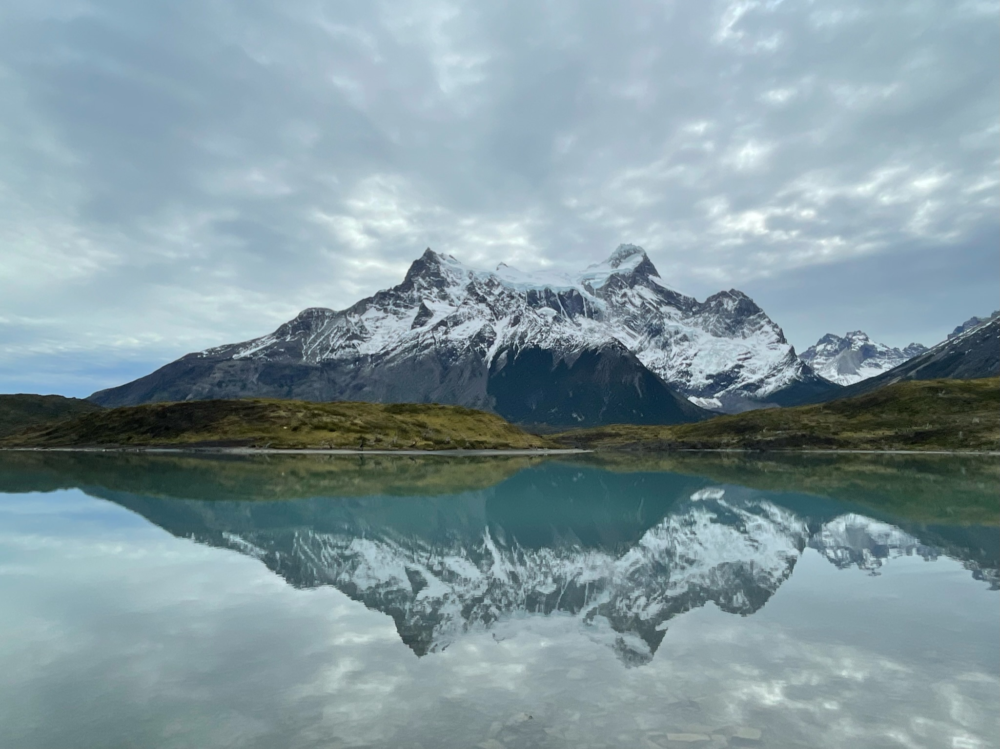
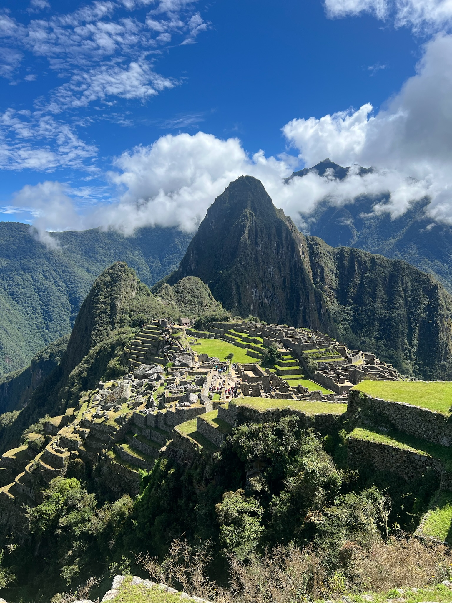
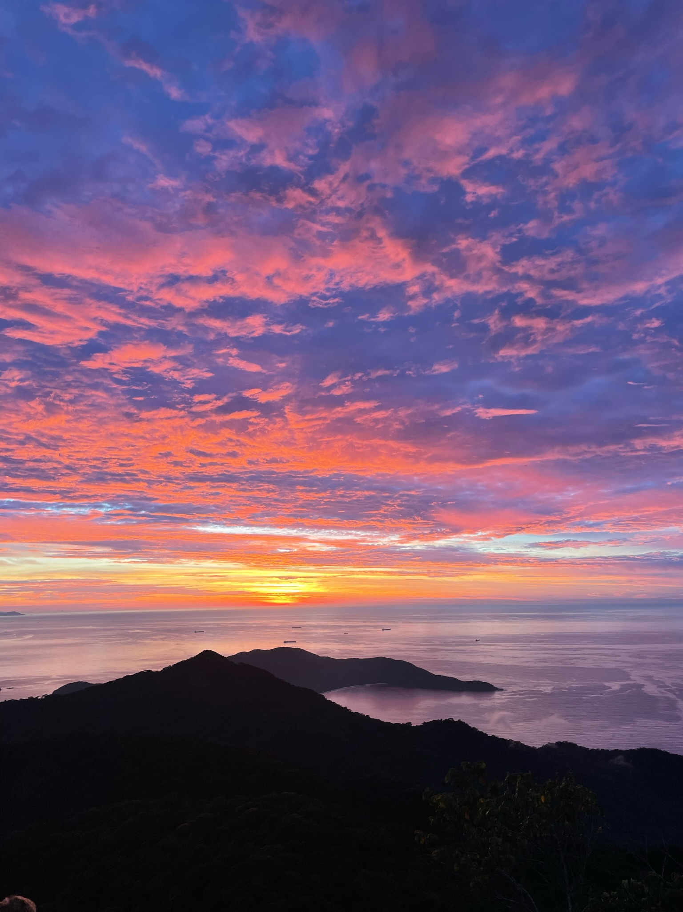
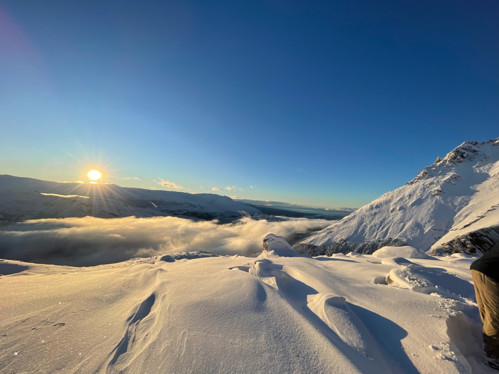
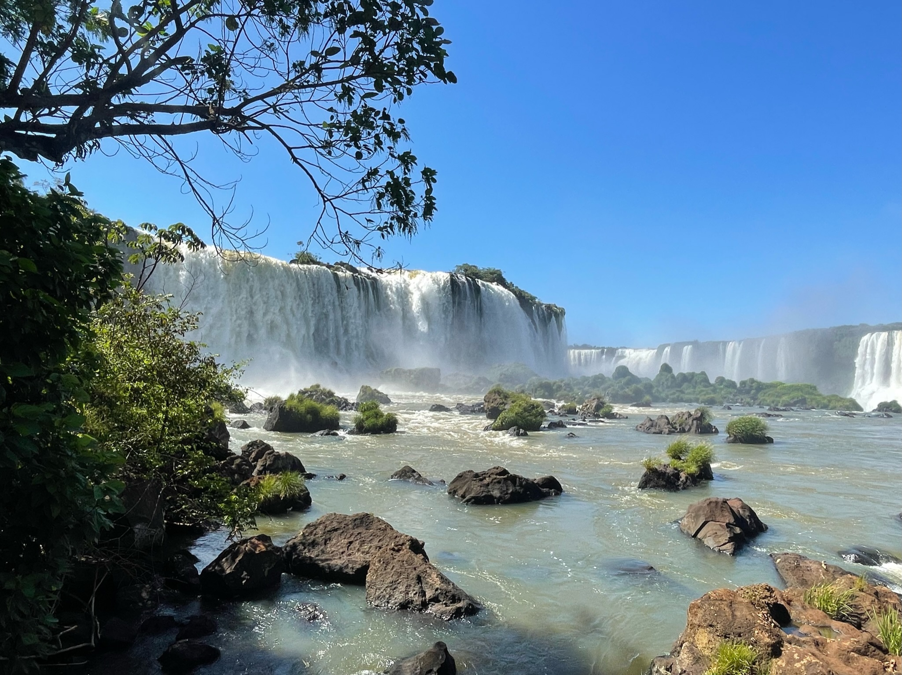
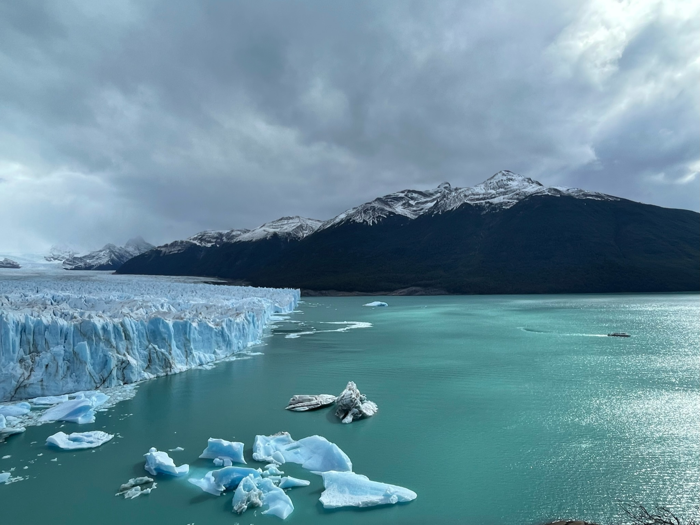
❮
❯
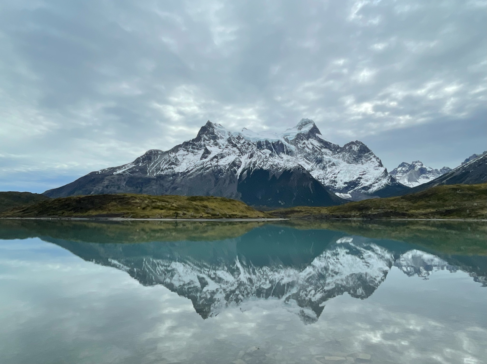
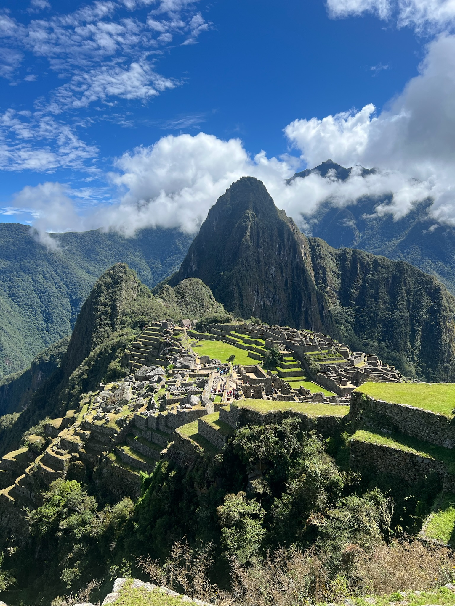
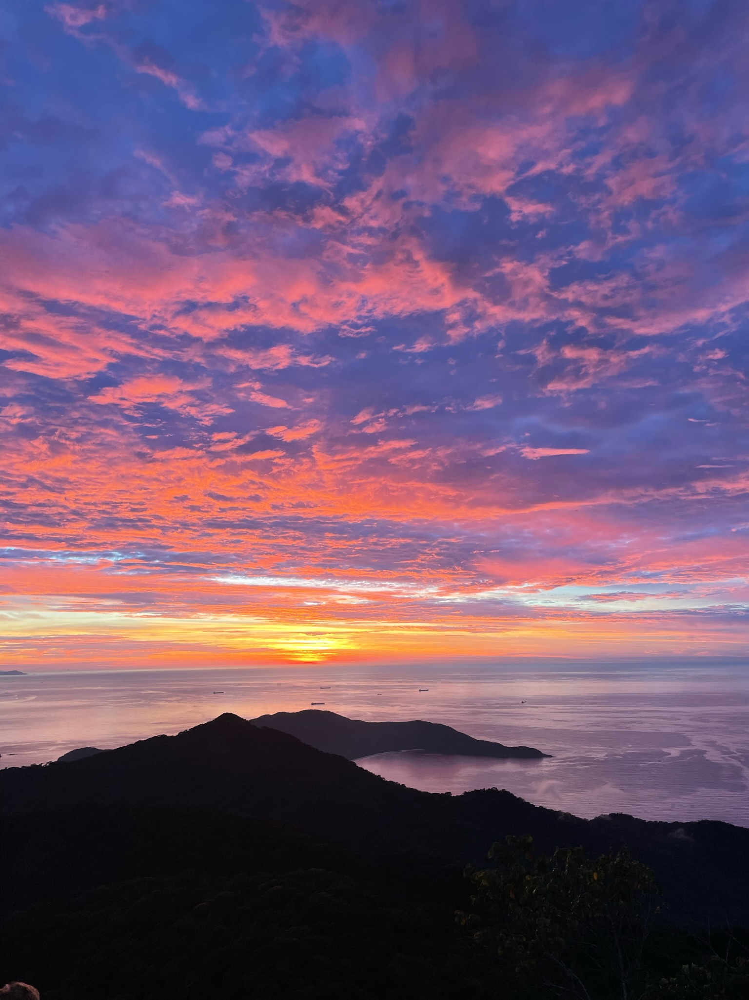
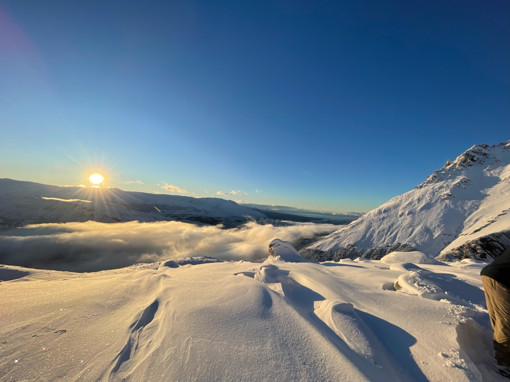
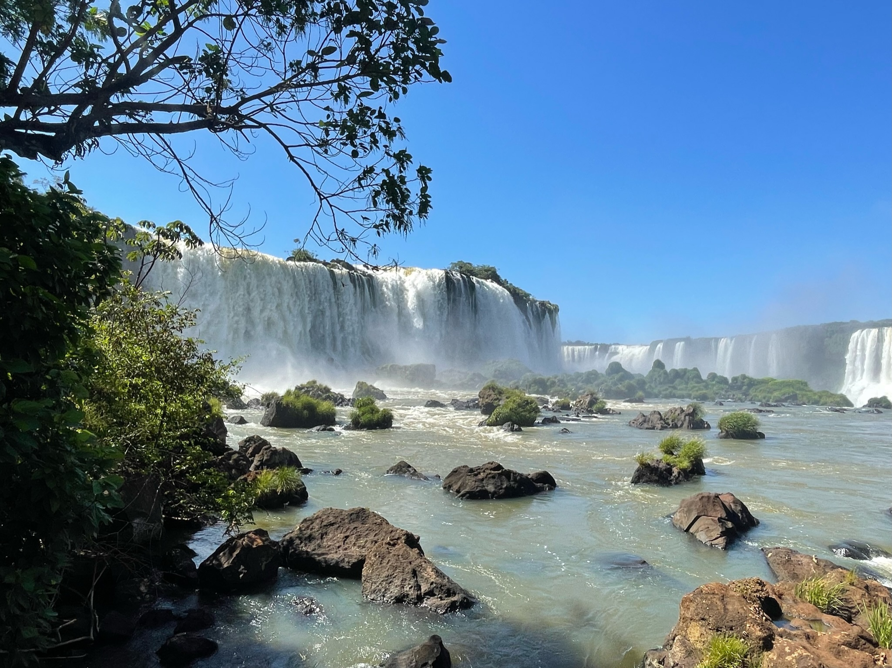
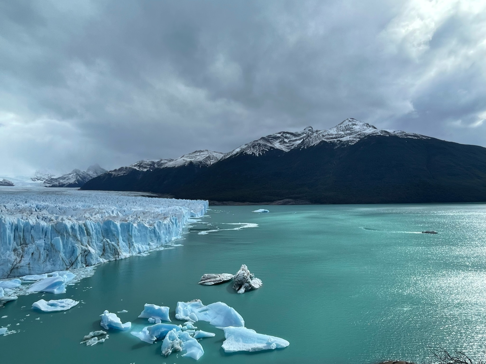
❮
❯
Backpacking and Hiking
I got into climbing and backpacking during college and have done some incredible things! I have backpacked Cordillera Huayhuash in Peru, O Circuit in Patagonia, Huemul Circuit in El Chalten, Quilotoa Loop in Ecuador, and many trips in the Sierras in the US! I have climbed mainly in the Eastern Sierras and Shenandoah area. I am excited to keep exploring my climbing and backpacking skills and getting more into mountaineering!
Climbing and Mountaineering
I enjoy pushing my limits and working through mental puzzles on rock and ice. Climbing brings together discipline, creativity, and a deep connection with the landscape.
Running
I have been a runner from a young age. It has been a very important part of my life and has led me to running half and full marathons, Boston qualifying during my first marathon. I am excited to see where my running takes me as I expand to ultra and trail running!
Writing & Storytelling
I run a Substack called Mad to Live, where I write about travel, philosophy, and the quiet drama of following a nonlinear path. I write to capture the moments that get overlooked, and to make sense of the choices that shape who we become.
I also run a Medium account in which I write about the environmental policy, energy systems, and climate change more generally.